GitHub URL tricks: change the link, change the view
A public GitHub link can become a diagram, code digest, file explorer, timeline or share card. But many viral lists mix working tools with login gates, failed services and shortcuts that cannot run your project.
We checked the popular options using one real example: salman-cc/cam, a public C11 camera-streaming project for Linux and Raspberry Pi. The project calls itself camstream. This is a guide to different views of its source, not a review or hardware test of the camera program.
Start with the right link
https://github.com/salman-cc/cam
salman-cc is the owner; cam is the repository. For a pure domain swap, keep that path and replace only github.com. Some useful links below also need a path prefix, branch or file name. Those are labelled rather than presented as one-letter tricks.
Quick pick: GitHub1s for reading files, GitDiagram for a starting architecture map, Gitingest for selected text context, and GitHubTree for the folder structure. Use the other views when their particular output is useful.
1. GitDiagram
Use this when folder names do not explain how a project fits together. Replace hub with diagram.
github.com → gitdiagram.com
https://gitdiagram.com/salman-cc/cam
- Open the transformed repository link and let the page load.
- Read the explanation and explore the diagram. Open source links for connections that matter.
- Check the diagram date before treating it as a map of the latest code.
What worked: An existing diagram opened with 28 components and 34 connections. The page dated it 22 November 2026 at 9:12 AM, before this check. We did not regenerate it. Its information panel marked 16 of 34 connections as having evidence. Source links included src/camstream_main.c, src/app/app_server.c, src/media/source_worker.c and src/media/frame_hub.c. These correspond to the native entry point, server loop and camera pipeline in the public source. This is an AI map, not proof that every connection or runtime path is correct.
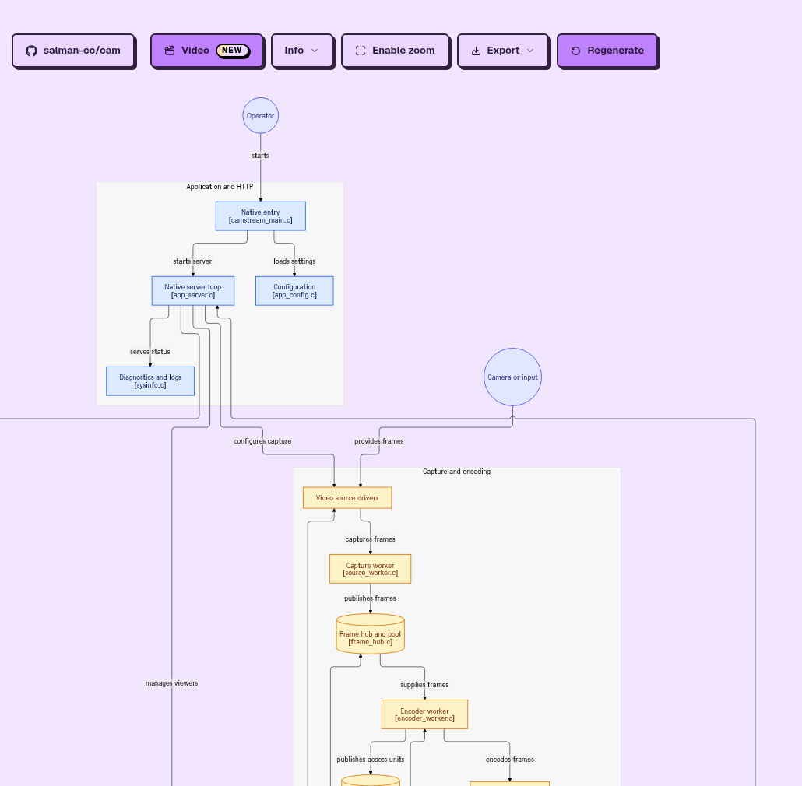
Operator/source: The terms name Ahmed Khaleel. The linked official source project is MIT-licensed.
Cost and limits: The existing public view opened with no account, key or payment. The support page says hourly allowances apply per person and network, without one universal quota. We did not test a new generation, private access or videos. Its terms allow paid videos. A cost shown in a diagram information panel is not a payment we made.
Private-code boundary: The provider policy says repository content goes to AI providers and public diagrams remain available to other visitors. Its private-token and cookie handling are provider statements, not an independent audit. Do not use this public walkthrough for confidential code.
2. Gitingest
Use this to prepare selected code context for an AI tool. Replace hub with ingest.
github.com → gitingest.com
https://gitingest.com/salman-cc/cam
- Open the link and inspect the repository summary and directory tree.
- Check include/exclude rules and the per-file size cap. The default displayed in our test was 50 kB.
- Check that the files needed for your question are actually present. Review the preview before using the copy/download controls.
What worked: The digest reported 78 analyzed files and an estimated 194.2k tokens at revision ed5fbe1. The displayed tree omitted src/app/app_server.c, which is 98,768 bytes in that revision. The output preview also explicitly said it was cropped to 300,000 characters. A successful response therefore does not mean a complete codebase, or even a complete on-page digest. We verified the on-page result, not clipboard contents or a downloaded full ingest.
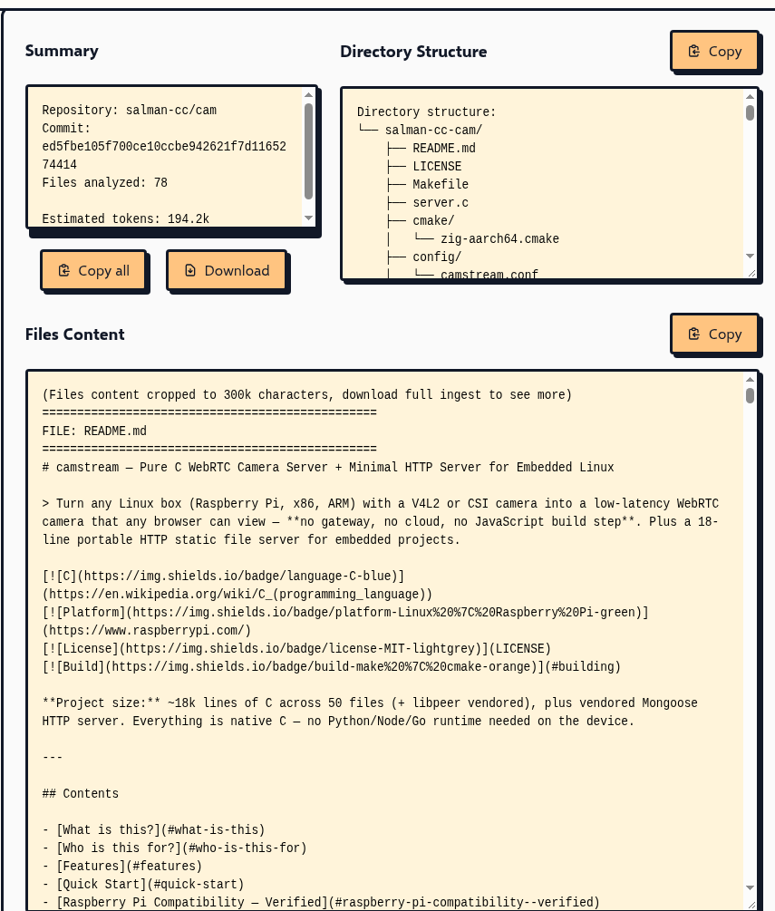
Operator/source: The live site links to coderamp-labs/gitingest, an MIT-licensed project.
Cost and limits: No login, token, card or payment was requested for this public digest. File caps, filters, hosted-service limits and the receiving AI context window still apply. The token figure is an estimate, not an accuracy score or a guarantee that the digest fits your chatbot. We did not establish an unlimited hosted allowance.
Private-code boundary: Its official source documents private-token and local/self-hosted options. We did not use them or establish hosted retention/deletion guarantees. Passing a digest to another AI service adds another recipient. Keep private code and tokens out of this public workflow.
3. GitHub1s
Add 1s after github for a familiar VS Code-style file explorer.
github.com → github1s.com
https://github1s.com/salman-cc/cam
- Open the transformed link.
- Read and dismiss the notice that this is not an official GitHub service.
- Open README.md, then choose server.c in the Explorer to inspect actual C source.
What worked: The real repository tree and README preview loaded. We opened server.c and read its Mongoose-based static-file-server code. This is code browsing without a local clone. It did not build or run the camera program.
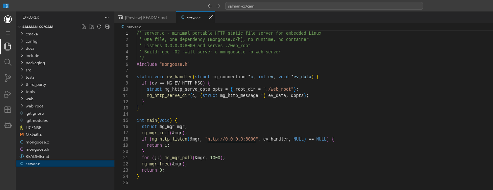
Operator/source: The independent conwnet/github1s project is MIT-licensed. Its README lists conwnet, xcv58 and Siddhant Khare as maintainers.
Cost and limits: The public files opened without login, a token or payment. The project says anonymous use is subject to upstream access/rate limits and remote repositories are read-only. Optional AI features have separate model-provider requirements and costs; they were not configured.
Private-code boundary: Account/token connections and optional AI context sharing are separate workflows. We tested neither and make no private-code security or retention promise.
4. GitHub.gg, file-context view
Swap the domain to browse selected files and prepare code context. Do not confuse the working file view with a completed AI scorecard.
github.com → github.gg
https://www.github.gg/salman-cc/cam
- Open the repository route and wait for file loading.
- Inspect Selected Files and the Files panel.
- Check the size filter before relying on the selection.
What worked: The page loaded 73 selected files at ed5fbe1, with actual source text. Its panel used a 50 KB limit and marked four files hidden because they were too large. We inspected the displayed source, not the clipboard/export result. We did not test AI scores, vulnerability verdicts, wiki generation or paid features.
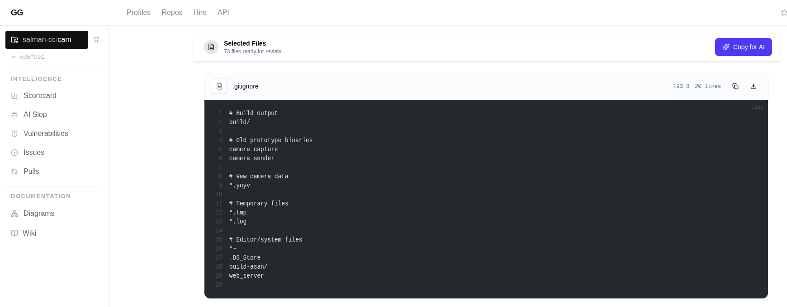
Operator/source: The live page links to lantos1618/github.gg.
Cost and limits: This file-reading route worked unsigned and without payment. The site also has paid plans and authenticated features. Our result is not a claim that all GitHub.gg features are free.
Private-code boundary: Do not connect a private-repository account or supply a model key to follow this guide. Private access and hosted retention were not tested.
5. GitHubTree
This one changes the path too. Use it for a compact directory map, rather than an AI architecture explanation.
github.com/OWNER/REPO → githubtree.mgks.dev/repo/OWNER/REPO/main/
https://githubtree.mgks.dev/repo/salman-cc/cam/main/
- Open the tested /repo/ link. If necessary, enter salman-cc/cam and branch main on the home page, then press Fetch.
- Expand folders, inspect sizes and use the tree filter to find relevant paths.
- Treat the result as a directory listing, not a runtime dependency graph.
What worked: The public tree loaded and reported 85 files and 22 directories. The tree included include/media, src/app/app_server.c and the camera/network folders. File totals differ across services because their inclusion rules differ. A tree does not prove that submodule contents or every external dependency were included.
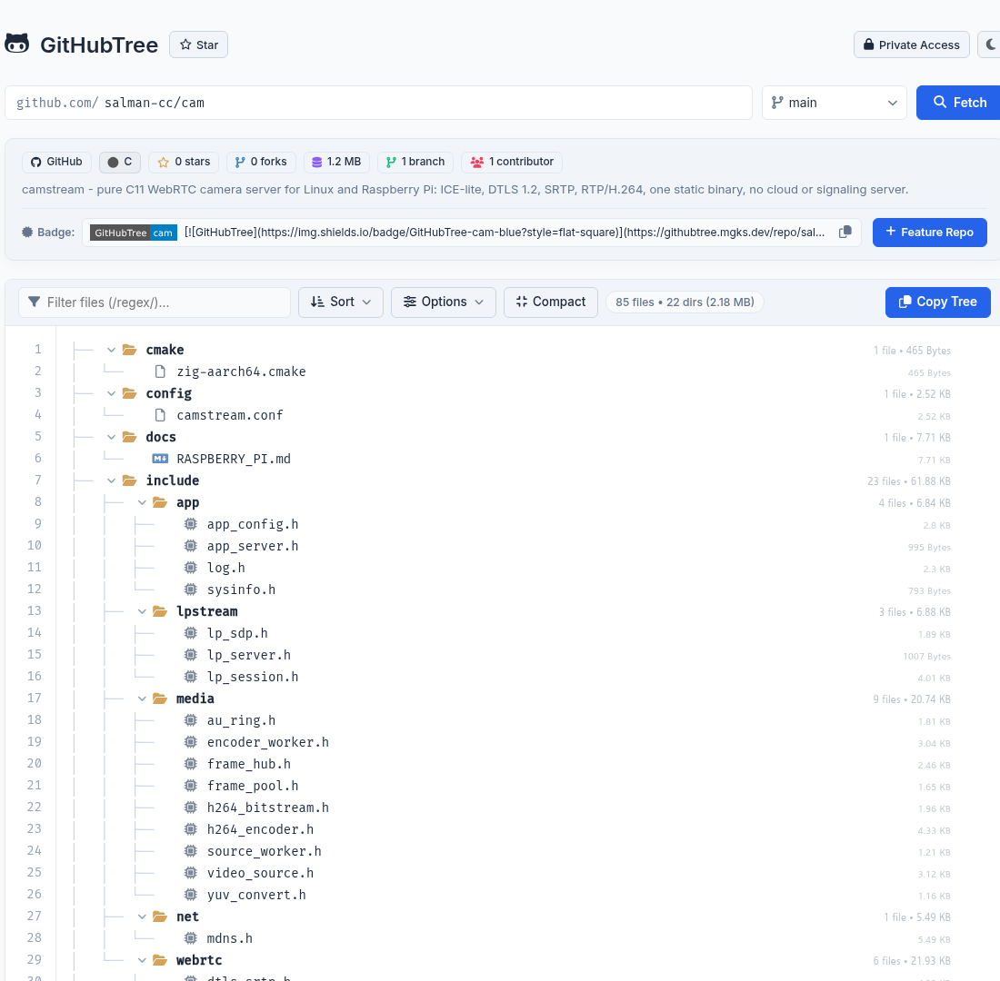
Operator/source: The site identifies the mgks/GitHubTree project.
Cost and limits: Public fetch and tree browsing needed no login, token or payment in this test. We did not verify an unlimited API allowance or test the copy control.
Private-code boundary: The site has a separate Private Access control. It was not used; no token was supplied. Public browsing success does not establish private-code handling.
6. GitReverse
Use this to see a short, plain-language brief for what someone might ask an AI coding tool to build. It does not recover a historical prompt.
github.com → gitreverse.com
https://www.gitreverse.com/salman-cc/cam
- Open the transformed repository route.
- Read the returned brief and compare its claims with the README.
- Use it as a draft requirements summary, not as evidence of how the author originally made the project.
What worked: A three-paragraph prompt appeared describing a C Linux/Raspberry Pi camera streamer, H.264/WebRTC, hardware/software encoder fallback, diagnostics and a separate tiny static-file server. Those themes match the public README. We did not paste the prompt into a coding agent or try to recreate the project.
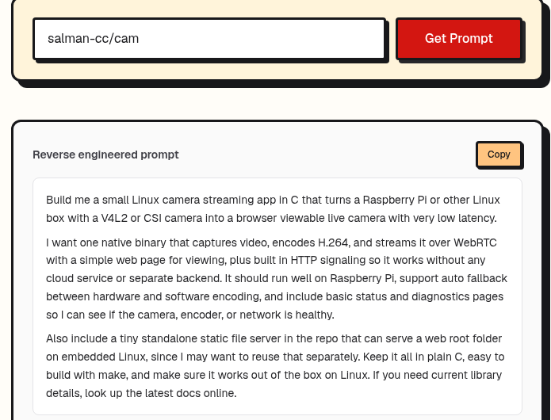
Operator/source: The filiksyos/gitreverse source calls the output a synthetic prompt and says its quick flow uses repo metadata, a shallow file tree and README. It is not a line-by-line source audit.
Cost and limits: This public prompt view opened without sign-in, a key or payment. No unlimited generation quota was established. Account features, sponsored offers and any paid routes are outside this test.
Private-code boundary: Public context is processed by the service and an LLM; the exact hosted model, retention and logging were not independently established. Its source supports caching. Do not put private code into this workflow.
8. GithubTracker
Insert tracker after github to see repository activity rather than source code.
github.com → githubtracker.com
https://githubtracker.com/salman-cc/cam
- Open the transformed repo link and let the metrics populate.
- Choose the activity window, then inspect commits, issues and pull requests.
- Follow GitHub links for an event that matters rather than relying on an aggregate alone.
What worked: The dashboard populated commit history and charts without login. It displayed zero open issues and three open pull requests for this repo, with a 30-day activity view. Counts are a dated snapshot; activity and popularity do not establish code quality or safety.
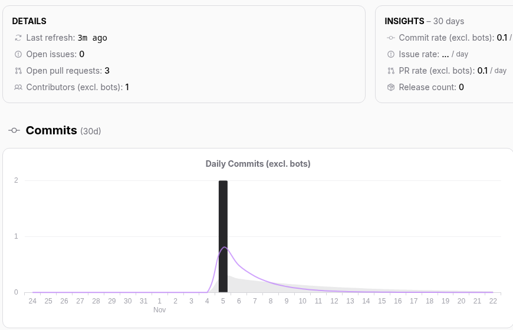
Operator/source: The About page identifies the maker as Toni.
Cost and limits: The public dashboard worked without payment. The site says authentication increases the API budget. We did not sign in, and do not promise an unlimited anonymous allowance.
Private-code boundary: Its privacy page describes browser-local application data and names analytics providers. Those are provider statements, not proof of zero data collection. Private tracking is a separate opt-in workflow that was not used.
9. Gittodoc, current timeline view
The deployed page we checked shows a repository timeline. Some descriptions of the project still call it a documentation converter, so use the live result rather than that older label.
github.com → gittodoc.com
https://gittodoc.com/salman-cc/cam
- Open the repo route and inspect the timeline header.
- Read an event and follow its View source link.
- Check how much history was sampled before treating it as a full project history.
What worked: A timeline loaded with 18 commits sampled, four merged pull requests and zero releases reported in its header. It included camera-pipeline/Pi work and the 5 November MIT-license event. We checked that the latest event linked to the real ed5fbe1 commit adding LICENSE. The narrative is a service summary, not a complete or independently verified history.
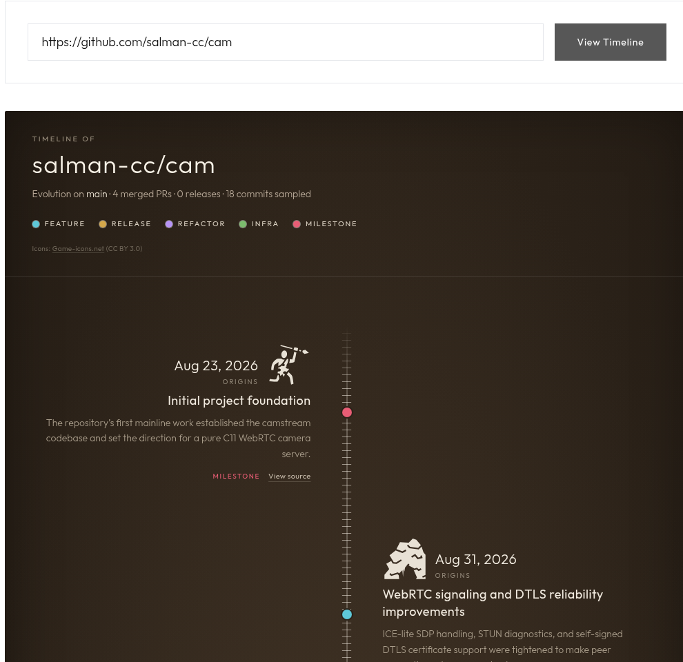
Operator/source: The deployed page credits Filiksyos and links to filiksyos/gittodoc. That linked README still describes an experimental documentation converter; it does not fully document the timeline UI we observed.
Cost and limits: The public timeline opened without sign-in, a key or payment. We did not establish generation quotas or test private access. A working cached/view route is not a promise that every repository will process successfully.
Private-code boundary: No confidential input was entered. Hosted timeline generation, cache retention and private-code handling were not independently established; keep this example public.
10. ForGitHub
Use this as a launcher when you cannot remember all the spellings. It prepares links, not code analysis.
github.com → forgithub.com
https://forgithub.com/salman-cc/cam
- Open the transformed repository link.
- Choose a tool category and inspect its destination hostname.
- Apply the checks in this guide before trusting the linked service or entering credentials.
What worked: The launcher recognized salman-cc/cam and prepared repo-specific links, including GitDiagram, Gitingest and GitMCP. We inspected the actual destinations. A link appearing in this directory is not a guarantee that the service still works or remains no-signup, as the failed checks below show.
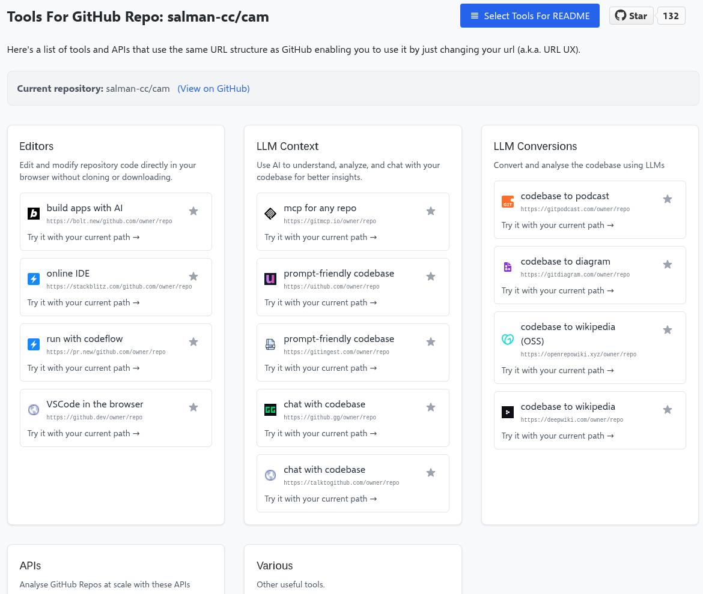
Operator/source: The page links to janwilmake/forgithub.
Cost and limits: The launcher itself needed no account or payment. Each destination has its own limits, prices and permissions; inclusion in the directory does not transfer any free-use promise.
Private-code boundary: Changing the hostname visits another operator. Use public repo paths only, inspect the target and do not let a directory convince you to grant GitHub access.
File-level shortcuts, not whole-repo converters
These links were checked against the same public revision. They deliver files or changes; they do not explain architecture or run the camera server.
Raw GitHub source
Use a raw-content link when you need just a file, without the repository interface. The tested server.c response matched the source byte-for-byte:
https://raw.githubusercontent.com/salman-cc/cam/ed5fbe105f700ce10ccbe942621f7d1165274414/server.c
jsDelivr and raw.githack
Two public file-delivery routes also returned the same 746-byte C file:
https://cdn.jsdelivr.net/gh/salman-cc/cam@ed5fbe105f700ce10ccbe942621f7d1165274414/server.c https://raw.githack.com/salman-cc/cam/ed5fbe105f700ce10ccbe942621f7d1165274414/server.c
Open the tested jsDelivr file · Open the tested raw.githack route
The raw.githack C-file route ultimately redirected to GitHub raw content in this test. We did not test it as a live HTML app preview. Neither service makes a C camera server execute in the browser.
jsDelivr's official guide calls it a free open-source CDN and says files may remain cached after deletion at GitHub. raw.githack, whose page identifies Pavel Puchkin as operator, describes a free service without an uptime guarantee and different development/permanent-cache routes. Only use code you are allowed to redistribute. Never use either as storage for a secret or private file.
Read Markdown source with ?plain=1
On a GitHub Markdown file, append ?plain=1. Our example showed the actual Markdown source, including the leading heading markers:
https://github.com/salman-cc/cam/blob/main/README.md?plain=1
Get a commit as .diff or .patch
Append .diff or .patch to a commit URL. Both tested responses showed the addition of the MIT LICENSE file, rather than a rendered commit page.
Open the tested .diff · Open the tested .patch
A patch can contain public author metadata. Reading it is not applying it. We did not apply either file.
Download a pinned source ZIP without cloning
https://github.com/salman-cc/cam/archive/ed5fbe105f700ce10ccbe942621f7d1165274414.zip
The ZIP downloaded successfully; we inspected its file listing and verified that its server.c matched the same revision and src/app/app_server.c was present. Pinning a commit avoids a moving branch changing the example. A source archive does not automatically include the contents of Git submodules; it is not a ready-built application.
These native GitHub routes do not add a new third-party code analyzer. The relevant official documentation is viewing raw files and source archives.
Fork and star checks: working, but a quiet demo
These are URL/query-pattern helpers rather than simple hostname swaps. All were opened on this same repository, without a token or login:
- Active Forks returned the upstream repository row and no fork rows. The techgaun project offers an optional token for a larger budget. We did not supply one.
- Useful Forks explicitly reported that no one had forked this specific repository. Its open-source project likewise offers an optional token; none was entered.
- Star History accepted the repository and rendered a chart view, but this zero-star repo did not give a meaningful growth history. The page credits Bytebase and originally tim_qian; its source is available. We did not test image/CSV export.
These helpers may be more useful on a repository with forks or star activity. That is a limit of this demo's data, not evidence that a low-star project is bad. All private and authenticated routes remain outside this test.
Partial results: say what worked, not more
- AnswerGit: the file explorer opened server.c, but our submitted project-structure question ended in an error. No signup or key was needed for the file view. Do not present its AI chat as verified working. The linked project identifies its maintainer/source and Gemini-based AI features; hosted retention and unlimited use were not established.
- GitHubBox / CodeSandbox: the GitHubBox route redirected to a CodeSandbox file/README view without sign-in. That is a working read preview, not a running camera streamer. We did not save, fork, share or deploy a sandbox.
- Bolt: the import link showed files and README without a login, but there was no app preview; automatic setup showed an npm error and the session could not be saved. We entered no commands or AI request there.
- StackBlitz / pr.new: the StackBlitz route and pr.new route reached the same repository workspace with files. It warned that Git submodules were unsupported, and its preview environment did not establish a running C camera server.
The development sites can initialize an environment automatically when opened. We closed those test sessions. No camera hardware was connected, no camera application was built/run successfully, no command was entered and no upstream commit was made. A C/Linux/V4L2/WebRTC project is not made into a working browser app simply by swapping a domain. Account use, paid AI, private imports and deployment are not covered by these partial tests.
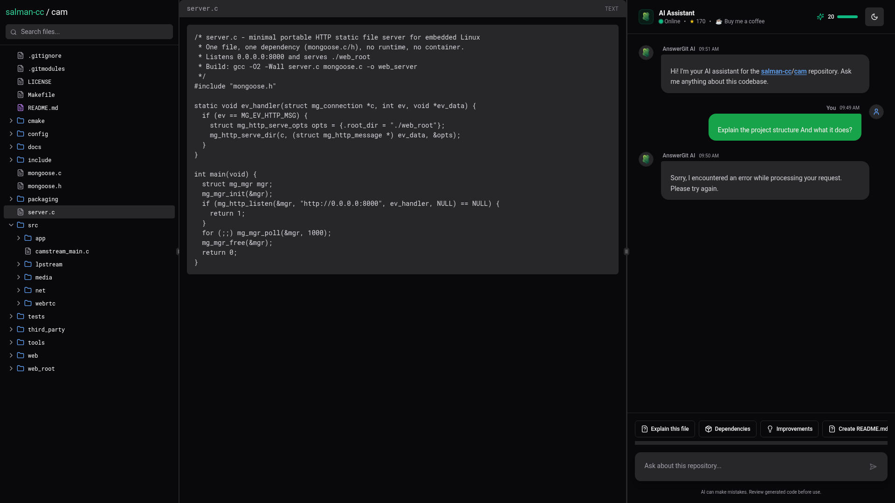
Popular names that did not pass this test
These are observations from this check, not claims that the services can never work. We did not enter credentials or personal contact details to get past a gate.
- uithub: the cam route hid repository contents and required GitHub sign-in. It does not meet this guide's no-signup gate.
- DeepWiki: salman-cc/cam was not indexed and its indexing form required a notification email. We did not submit one.
- GitMCP: the repo-specific server page and protocol connection worked, but an actual repository documentation fetch returned no documentation. We did not configure an AI account or count the landing page as a successful context fetch. The project describes a free public-repo MCP service; this particular functional test still did not pass.
- GitSummarize: README text appeared, but codebase processing failed and the page suggested supplying a Gemini key. No key was entered.
- ExplainGitHub: the repo page opened, but submitting its overview prompt required login before chat could continue.
- GitMVP and GitPodcast: their relevant feature views required sign-in.
- github.dev: this cam route redirected to vscode.dev but did not load a usable unsigned file view in our check. GitHub's official guide requires GitHub sign-in for github.dev. It is different from independent GitHub1s.
- GitUML: a repository/file-selection view appeared, but the generated-diagram output required login. We did not verify a useful C UML result.
- Google Code Wiki: the exact cam repository route returned a page-not-found result.
- Git1file: the requested route returned a rate-limit response; output was not verified.
- GitPop2 and cache.forgithub: the cam routes returned service/server errors.
- threads.forgithub: the cam route returned an empty list, not useful thread results.
- GitHub Next's old visualization demo: its linked demo route returned 404, although the research article remains readable. We did not install its repository-modifying Action.
- FlatGitHub: the old domain returned a site-not-found/configuration page. Code2Tutorial's listed route and home page could not be retrieved. Repo.surf and RepoMapr hostnames did not resolve in our browser checks. These were not verified as working tools.
- OpenRepoWiki and DeepGraph: the old domains landed on domain-for-sale pages.
- Gitpod: its old repo-import link landed on Ona's current product page, not a verified no-signup cam workspace.
- Replit and Firebase Studio/IDX: unsigned checks redirected to account sign-in. Colab did not provide a verified notebook/C-camera view for this route. Entelligence's listed repo route returned 404. DevPod's link is an installed-client launcher, not a verified browser-only view; no client was installed.
- Chat for GitHub and Sourcegraph: the former exposed authentication/API-key setup without verified chat output; the latter's exact cam route could not be retrieved as a usable indexed view. They are not counted as working examples.
- TalkToGitHub: the old repo route redirected to an unrelated domain with a verification-themed screen. We stopped without interacting. Do not follow an old tool-list link blindly.
Privacy, limits and what these tests do not prove
- A domain swap changes the operator. Similar spelling does not make a site part of GitHub. Only the native GitHub links in this guide stay within GitHub's file/commit/archive services.
- No signup is not zero data. No account, email, token, API key or payment detail was entered in the tested flows. Connection logs, cookies, analytics, cached public output and AI processing can still exist. We did not audit every deployment or retention policy.
- Public only. No private repo, private-code upload, GitHub OAuth grant or personal access token was tested. Do not treat public success as approval to expose work code. Every receiving AI provider has its own terms.
- Free access is scoped. The described public views worked without payment during this check. That does not mean unlimited use, permanent free access or free use of every optional AI/video/IDE feature.
- Check the included source. Large-file filters, submodules, selected contexts and old caches can leave out important code. We saw this directly in the digest/file-context views.
- Views are not validation. A pretty diagram, timeline, prompt or score is not a security audit, successful build or hardware test. Verify important claims against source and project documentation.
How we searched and checked
Discovery used current web searches, the ForGitHub directory, the iLoveGithub catalog and public source repositories/documentation. We opened the candidate cam routes, interacted where needed, and retained only the working functionality described above. The check is broad, not a claim to enumerate every GitHub-related website on the internet. Dead, gated and partial results are kept visible so an old viral list does not look like a current endorsement.
The local source comparison and Gitingest output used revision ed5fbe105f700ce10ccbe942621f7d1165274414. Existing diagrams, prompts and timeline caches are not proven to be based on that exact revision unless their own page establishes it. We did not regenerate them merely to manufacture a fresh timestamp.
Source trail
Each section links its tested route and available operator/source documentation. Additional sources: GitDiagram terms, the discovery catalog, GitHub Next's visualization research, and the verified latest license commit. Discovery directories are leads, not proof of current feature availability.
7. Socialify
Use this to turn public repository metadata into a shareable image. It is a card maker, not a code analyzer.
https://socialify.git.ci/salman-cc/cam?description=1
What worked: The card preview rendered
camand the public C11/WebRTC description. The generated image loaded at 1280 × 640. We verified the preview image, not the download button or posting it anywhere.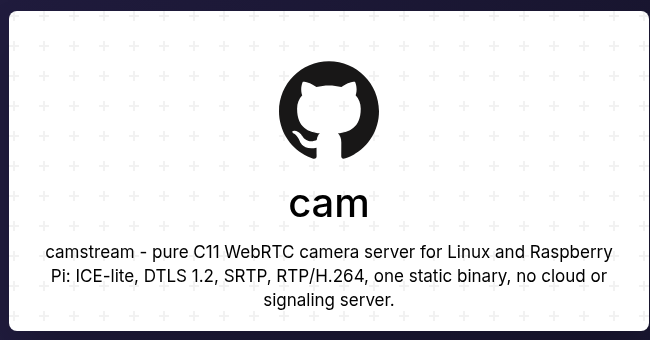
Operator/source: The site credits CryogenicPlanet and Wei and links to wei/socialify.
Cost and limits: The tested card needed no signup, token or payment. Optional external logos and hosting/embed use were not tested. A generated card does not imply endorsement by GitHub.
Private-code boundary: This example uses already-public metadata. Do not add a private image URL, confidential description or account credential. No private-repository workflow was tested.